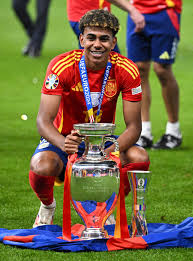

-
Debut con el Primer Equipo del FC Barcelona: En abril de 2023, Yamal se convirtió en el jugador más joven en debutar con el primer equipo del FC Barcelona, marcando un gol impresionante en su primer partido.
-
Trofeo Kopa 2024: En 2024, Yamal recibió el Trofeo Kopa, que se otorga al mejor futbolista joven del mundo, reconociendo su talento y contribuciones excepcionales al fútbol.
-
Eurocopa 2024: Yamal fue una pieza clave en la victoria de España en la Eurocopa 2024, ayudando a su equipo a ganar el torneo y destacándose por sus goles y asistencias.
-
Goles Destacados: A lo largo de la temporada 2023/2024, Yamal ha anotado varios goles memorables, incluyendo un impresionante gol de larga distancia contra el Real Madrid en el Clásico.
-
Participación en la Copa Mundial Sub-17: En 2022, Yamal representó a España en la Copa Mundial Sub-17, donde su desempeño fue clave para llevar a su equipo a las semifinales.
